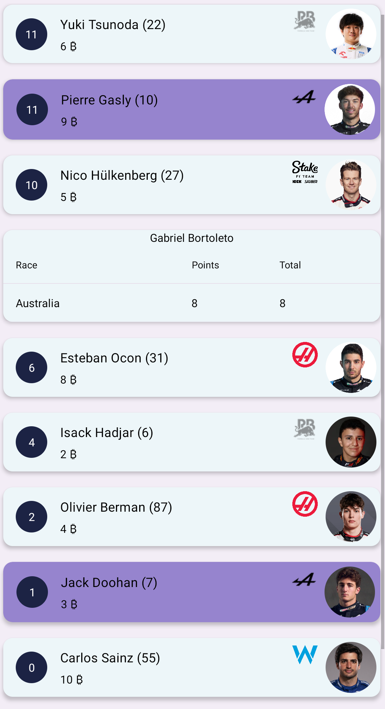
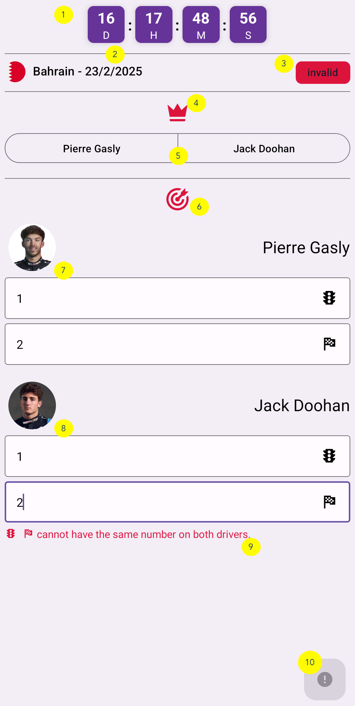
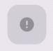
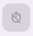
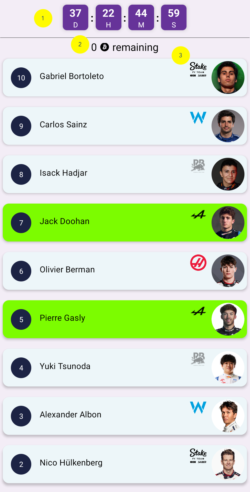
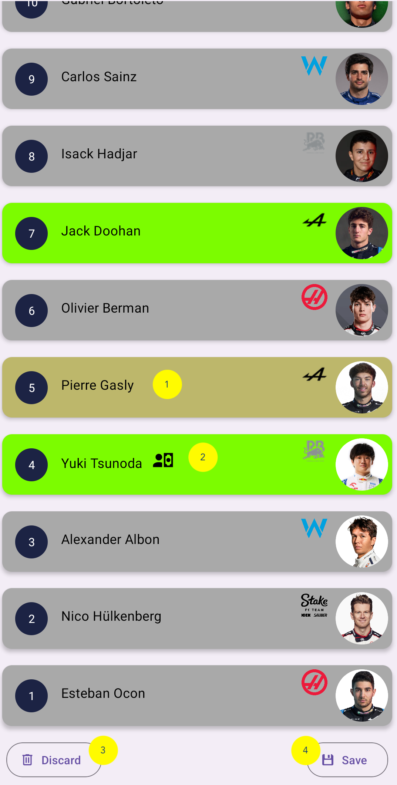

- Logo della squadra
- Prestazioni della squadra
- Prossima gara e relativo conto alla rovescia
Classifica delle squadre ordinata per punti.
Tira verso il basso per aggiornare la pagina qualche tempo dopo la gara!


Classifica piloti ordinata per punti.
Tira verso il basso per aggiornare la pagina qualche tempo dopo la gara!
I piloti posseduti saranno evidenziati con il colore scelto durante la creazione del player o nelle impostazioni.
I piloti della tua squadra saranno evidenziati con il colore scelto durante la creazione del player o nelle impostazioni.
Se un pilota viene sostituito permanentemente a metà stagione, la sua scheda rimarrà con l'etichetta "replaced by" e non riceverà più aggiornamenti.
Verrà aggiunta una nuova scheda per il nuovo pilota.
Tocca la scheda di un pilota per vedere i risultati di ogni gara.
Se un pilota viene sostituito temporaneamente per una o più gare, nei dettagli apparirà un'icona accanto ai punti ottenuti in quelle gare.

I punti ottenuti dal sostituto contribuiranno comunque alle squadre che possiedono il pilota sostituito.
In questa pagina sono elencate tutte le gare ordinate per data.
Tira verso il basso per aggiornare!

Azioni disponibili sulle schede:
Qui puoi vedere le scommesse delle squadre. Non saranno disponibili prima delle qualifiche.
Prima della fine della gara verranno mostrate solo le scommesse; una volta conclusa e aggiornati i punti (potrebbe richiedere tempo), accanto a ogni scommessa potrebbe apparire un'icona se corretta, altrimenti verrà mostrato il risultato reale del pilota.
Non dimenticare di tornare qui dopo la gara per controllare i risultati di tutte le squadre!
Le scommesse per una gara si aprono appena termina il Gran Premio precedente.
non valida: ci sono errori da correggere.
non salvata : ci sono modifiche non salvate.
Nessun indicatore significa che la scommessa è corretta e salvata.
Regole:
Scommessa valida e salvabile
Scommessa non valida
Tempo scaduto, non modificabile
Puoi modificare la scommessa finché il countdown non scade. Alla scadenza diventerà definitiva.
La schermata diventerà in sola lettura.

Qui puoi modificare configurazioni personali come:
Il Mercato Estivo si svolge durante la pausa estiva F1.
È possibile vendere un pilota per acquistarne un altro.
I prezzi vengono aggiornati in base ai risultati stagionali.
La pagina iniziale apparirà così:
Seleziona un pilota posseduto per iniziare l'operazione e acquistane uno tra quelli disponibili.
I binotti risparmiati inizialmente vengono conteggiati.
Puoi annullare l'operazione durante la pausa estiva.
Se non salvi nulla entro la fine, la squadra rimarrà invariata.
Cosa succede se un pilota viene sostituito?
Il sostituto verrà assegnato automaticamente alla squadra e porterà punti.
E se il mio pilota salta una o più gare?
I punti del sostituto verranno conteggiati normalmente.
Come vengono gestite eventuali penalità?
I punti vengono calcolati solo a decisioni definitive. Per le qualifiche conta la griglia effettiva, per la gara si attende la decisione FIA.
Piloti partiti dalla pit lane?
Partire dalla pit lane equivale alla 20ª posizione. Se più piloti partono dai box verrà considerato l'ordine ufficiale.
Ho dimenticato la prima scommessa?
Riceverai -5 punti. Se esiste una gara precedente verrà ereditata la scommessa; se è la prima gara stagionale riceverai solo la penalità.